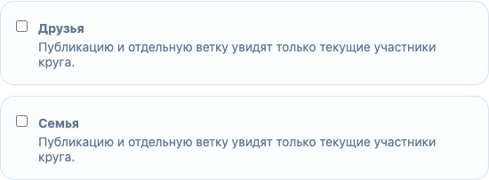

Шутки для друзей, семейные новости и рабочие проекты — для разных людей. Когда эти аудитории оказываются вместе, личным моментом бывает трудно поделиться: он уместен для одних, но не для других.
«Это поймут мои друзья»
«Этим хочу поделиться с семьёй»
«Это — для коллег»
С selecont ты выбираешь свой контекст для каждой публикации.
Публикация · взгляд автора
Один пост. Три круга.
Гриша выбирает семью, друзей и коллег. Он публикует пост один раз — его видят участники всех трёх выбранных кругов.
Для остальных пост закрыт: Public не выбран.
В центре — общая публикация. Каждый круг — её аудитория.
СемьяДрузьяКоллеги
@grisha
Один пост
Схема аудитории · круги выбирает авторОбсуждение
Один пост. Разные разговоры.
Семья и друзья видят один снимок, но комментарии и ответы остаются внутри своей аудитории.
Так видит семья
@grisha
Одна и та же публикация
Комментарии под постом
@mama
Какой хороший был день!
@grisha
Надо собраться ещё раз.
Ответ удалён
Так видят друзья
@grisha
Одна и та же публикация
Комментарии под постом
@max
Это тот самый старый альбом?
Комментарий удалён
@grisha
Да! Нашли его на выходных.
Удалён текст — сохранена ветка. Ответы других людей остаются на месте.
Лайки — общие для поста.
Пять уровней доступа
Кто видит твой контекст
Подписаться недостаточно. Доступ к частному кругу даёт автор.
Аноним
Зарегистрирован
Подписчик вне круга
Подписчик в круге
Автор
Открытый профиль и пост
✓
✓
✓
✓
✓
Комментарий к Public-посту
—
✓
✓
✓
✓
Частный профиль и пост
—
—
—
✓
✓
Частное обсуждение
—
—
—
✓
✓
Управление кругами
—
—
—
—
✓
Названия и состав кругов скрыты от зрителей. Автор управляет всеми своими кругами.
Контроль доступа
Ты решаешь, кто остаётся в круге.
Добавляешь человека — он видит выбранный профиль и посты. Убираешь из круга — доступ к ним закрывается.
@alexВ круге «Друзья»
Видит личную сторону профиля
✓Посты для друзей✓Обсуждения с друзьями
Убрать из круга→
@alexВидит Public
Видит только открытую часть
—Личные посты недоступны—Частные ветки недоступны
Кругами управляешь ты. Их названия и участники видны только тебе.
Что уже работает
От профиля до обсуждения — в рабочем демо.
Круги и профили
Разные био, фото и состав аудитории
Публикация

Один пост для выбранных кругов
Обсуждения
Ответы, удаление и отдельные ветки
Вход и сессии · подписка · фото · общий лайк · отзыв доступа


Какой хороший был день!